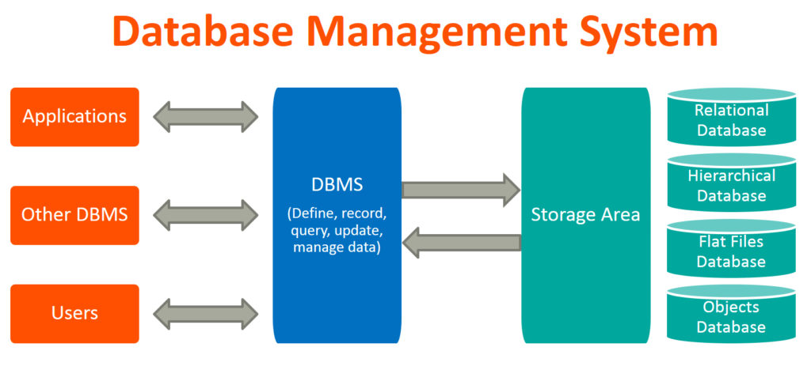

Database Management System (DBMS) refers to the technology solution used to optimize and manage the storage and retrieval of data from databases. DBMS offers a systematic approach to manage databases via an interface for users as well as workloads accessing the databases via apps. The management responsibilities for DBMS encompass the information within databases; the processes applied to databases such as access and modification; as well as the logical structure of the database. DBMS also facilitates additional administrative operations such as change management, disaster recovery, compliance and performance monitoring, among others.
In order to facilitate these functions, DBMS has the following key components:
Software: DBMS is primarily a software system that can be considered as a management console or an interface to interact with and manage databases. The interfacing also spreads across real-world physical systems that contribute data to the backend databases. The OS, networking software and the hardware infrastructure is involved in creating, accessing, managing and processing the databases.
Data: DBMS contains operational data, access to database records and metadata as a resource to perform the necessary functionality. The data may include files with such as index files, administrative information and data dictionaries used to represent data flows, ownership, structure and relationships to other records or objects.
Procedures: While not a part of the DBMS software, procedures can be considered as instructions on using DBMS. The documented guidelines assist users in designing, modifying, managing and processing databases.
Database Languages: These are components of the DBMS used to access, modify, store and retrieve data items from databases; specify database schema; control user access and perform other associated database management operations. Types of DBMS languages include Data Definition Language (DDL), Data Manipulation Language (DML), Database Access Language (DAL) and Data Control Language (DCL).
Query Processor: As a fundamental component of the DBMS, the Query Processor acts as an intermediary between users and the DBMS data engine in order to communicate query requests. When users enter an instruction in SQL language, the command is executed from the high-level language instruction to a low-level language that the underlying machine can understand and process to perform the appropriate DBMS functionality. In addition to instruction parsing and translation, the Query Processor also optimizes queries to ensure fast processing and accurate results.
Runtime Database Manager: A centralized management component of DBMS that handles functionality associated with runtime data, which is commonly used for context-based database access. This component checks for user authorization to request the query; processes the approved queries; devises an optimal strategy for query execution; supports concurrency so that multiple users can simultaneously work on same databases; and ensures integrity of data recorded into the databases.
Database Manager: Unlike runtime database manager that handles queries and data at runtime, the database manager performs DBMS functionality associated with the data within databases. Database manager allows a set of commands to perform different DBMS operations that include creating, deleting, backup, restore, cloning and other database maintenance tasks. Database manager may also be used to update the database with patches from vendors.
Database Engine: This is the core software component within the DBMS solution that performs the core functions associated with data storage and retrieval. A database engine is also accessible via APIs that allow users or apps to create, read, write and delete records in databases.
Reporting: The report generator extracts useful information from DBMS files and displays it in structured format based on defined specifications. This information may be used for further analysis, decision making or business intelligence.

DBMS was designed to solve the fundamental problems associated with storing, managing, accessing, securing and auditing data in traditional file systems. Traditional database applications were developed on top of the databases, which led to challenges such as data redundancy, isolation, integrity constraints and difficulty in managing data access. A layer of abstraction was required between users or apps and the databases at a physical and logical level. By introducing a technology solution to manage databases in the form of DBMS software, the following key benefits are realized:
Data Security: DBMS allows organizations to enforce policies that enable compliance and security. The databases are available for appropriate users as per organizational policies. The DBMS system is also responsible to maintain optimum performance of querying operations while ensuring the validity, security and consistency of data items updated to a database.
Data Sharing: Fast and efficient collaboration between users.
Data Access and Auditing: Controlled access to databases. Logging associated access activities allows organizations to audit for security and compliance.
Data Integration: Instead of operating island of database resources, a single interface is used to manage databases with logical and physical relationships.
Abstraction and Independence: Organizations can change the physical schema of database systems without necessitating changes to the logical schema that govern database relationships. As a result, organizations can upgrade storage and scale the infrastructure without impacting database operations. Similarly, changes to the logical schema can be applied without altering the apps and services that access the databases.
Uniform Management and Administration: A single console interface to perform basic administrative tasks makes the job easier for database admins and IT users.
For data-driven business organizations, DBMS can turn into extremely complex technology solutions that may require dedicated resources and in-house expertise. The size, cost and performance of a DBMS varies with the system architecture and use cases, and should therefore be evaluated accordingly. Also, a DBMS failure can incur significant losses to organizations that fail to maintain optimal functionality of a DBMS system.